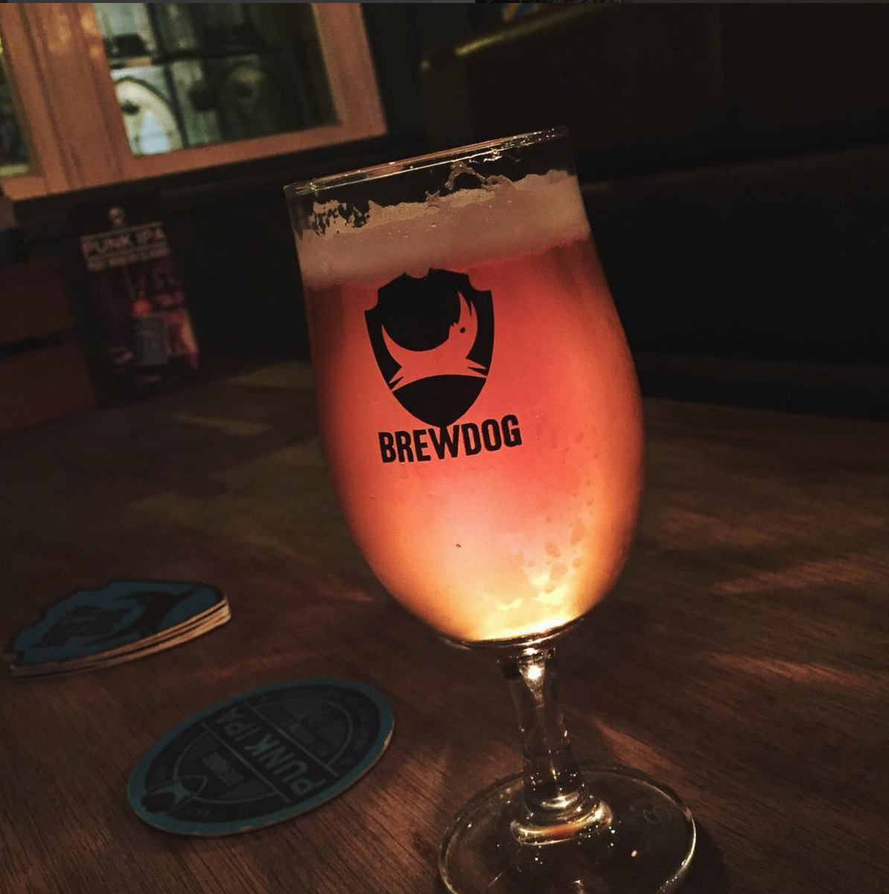
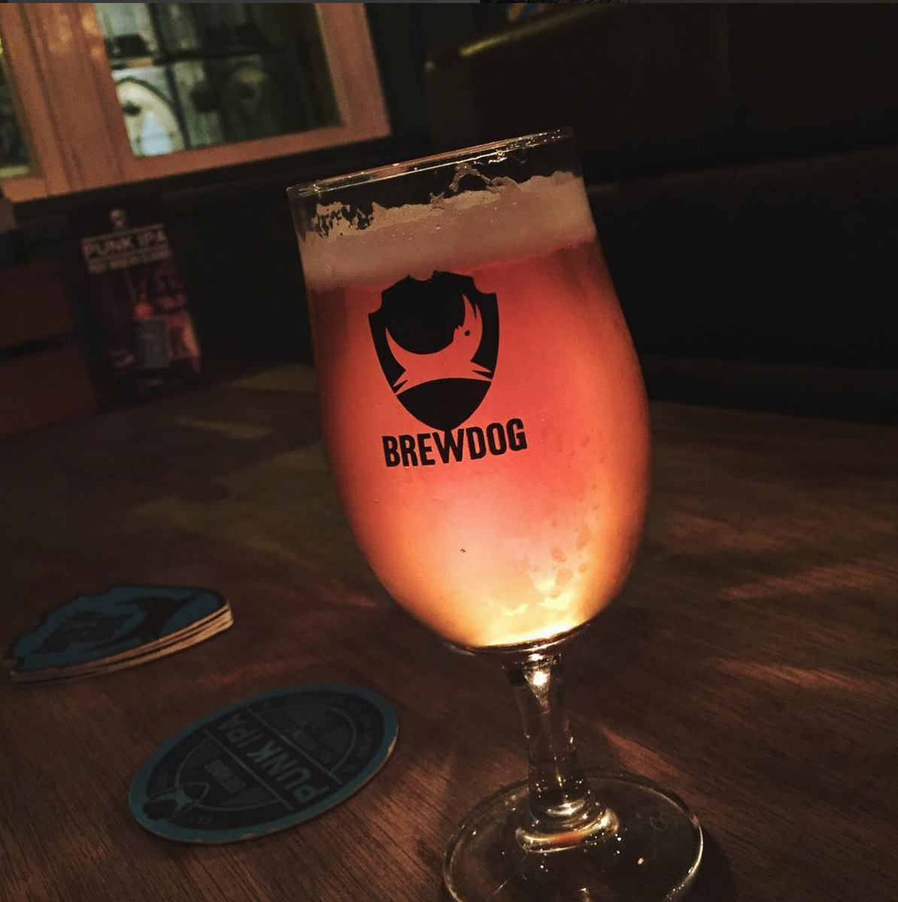

Around St Andrews
Keep up to date! Check out Luvians and St Andrews Brewing Company on Twitter!
Check our map for our fave picks around town!
In Town: Innis & Gunn Beer Kitchen
 Found at [xxx North St], the newest addition to St Andrews beer scene is Beer Kitchen from Edinburgh's Innis and Gunn
Found at [xxx North St], the newest addition to St Andrews beer scene is Beer Kitchen from Edinburgh's Innis and Gunn
In Town: Luvians Bottleshop
 Hit up Luvians Bottleshop at 66 Market St for the best craft beer selection in town
Want to find out more? Check out our *interview* with Archie McDiarmid, manager of Luvians!
Hit up Luvians Bottleshop at 66 Market St for the best craft beer selection in town
Want to find out more? Check out our *interview* with Archie McDiarmid, manager of Luvians!
In Town: St Andrews Brewing Company
 In Town: Aikman's
In Town: Aikman's
 In Town: St Andrews Wine Company
In Town: Eden Mill
Out of Town: Brewdog Dundee

A short bus ride away is the awesome Brewdog Dundee! They offer a great range of both their own and guest beers on tap,
as well as an awesome bottle shop if you fancy taking something home.
Out of Town: Salt Horse Edinburgh
In Town: St Andrews Wine Company
In Town: Eden Mill
Out of Town: Brewdog Dundee

A short bus ride away is the awesome Brewdog Dundee! They offer a great range of both their own and guest beers on tap,
as well as an awesome bottle shop if you fancy taking something home.
Out of Town: Salt Horse Edinburgh
 Next time you're over in Edinburgh check out the awesome Salt Horse. This teeny-tiny bar tucked away on xxxx St
boasts an awesome range on tap, including some of the newest Cloudwater and Pilot releases! Their bar snacks kick ass too - be sure to check out the cheese!
Next time you're over in Edinburgh check out the awesome Salt Horse. This teeny-tiny bar tucked away on xxxx St
boasts an awesome range on tap, including some of the newest Cloudwater and Pilot releases! Their bar snacks kick ass too - be sure to check out the cheese!